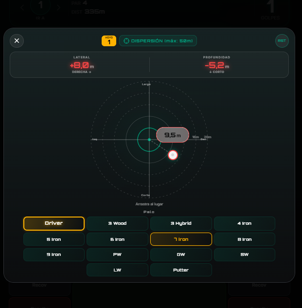

DATA2GAIN
Datos que ganan
Tu juego genera datos.
Nuestra IA genera ventaja.
Analítica de golf de nivel profesional
Dashboard inteligente, dispersión, gap de distancias, planificación y estadísticas detalladas por área. Todo conectado por IA.
Tu centro de control
Visualiza tu rendimiento de un vistazo. Objetivos de mejora y tu desglose Strokes Gained en las 4 áreas clave.

Dispersión real de cada palo
Visualiza exactamente dónde van tus golpes. El scatter plot te muestra tu patrón de dispersión real — identifica tu tendencia (fade, draw, recta) y toma mejores decisiones de estrategia.

Gap de distancias
Conoce la distancia real de cada palo — no la que crees que llegas. El análisis gap te muestra huecos de cobertura en tu bolsa y te ayuda a elegir el palo correcto en cada situación.

Planificación de golpe inteligente
Planifica cada golpe con datos reales. Basándose en tu dispersión y distancias para una estrategia sin fisuras.

Estadísticas de gran detalle
Analiza cada área de juego (Tee, Approach, Short, Putt) con una profundidad sin precedentes. Identifica patrones específicos y tendencias para optimizar tu entrenamiento donde más lo necesitas.

Un asistente IA que entiende tu juego
Pregúntale lo que quieras sobre tu rendimiento. Análisis, recomendaciones y estrategia — basados en tus datos reales.
Pregunta con lenguaje natural
Escribe cualquier pregunta sobre tu juego. El agente tiene acceso completo a tu historial, estadísticas y tendencias. Puedes pedirle desde un resumen rápido hasta un análisis profundo de cualquier aspecto.

Recibe análisis de nivel profesional
El agente responde con datos, gráficas y recomendaciones accionables. Desglosa tu rendimiento por distancias, identifica patrones ocultos y sugiere acciones concretas de práctica.

Mide lo que realmente importa
El mismo sistema que usan los profesionales del PGA Tour. Compara tu rendimiento real contra el benchmark y descubre exactamente dónde ganar golpes.
- ✦Tee · Approach · Short Game · Putting
- ✦Comparación vs PGA Pro en tiempo real
- ✦Tendencias históricas y evolución
Ingeniería de datos aplicada al golf
Modelos de machine learning entrenados con datos reales. Cada golpe alimenta algoritmos que mapean tu patrón de juego único.
const analyzeDispersion = (shots) => {
const lateral = calcDeviation(shots, 'x');
const depth = calcDeviation(shots, 'y');
return {
consistency: getScore(lateral, depth),
pattern: detectBias(shots),
sg_impact: strokesGained(shots)
};
};
Además ofrecemos
Tecnología
Ofrecemos una plataforma tecnológica de análisis integral del rendimiento del jugador, a disposición del entrenador, para que pueda desarrollar y personalizar cualquier tipo de analítica.
Consultoría
Ayudamos a tu entrenador a marcar la diferencia, usar tu tiempo más eficientemente y conseguir tus objetivos de la manera más rápida posible.
Formación
Ofrecemos workshops a coaches y entrenadores para capacitarles en el uso de la estadística y el big data aplicada al golf.